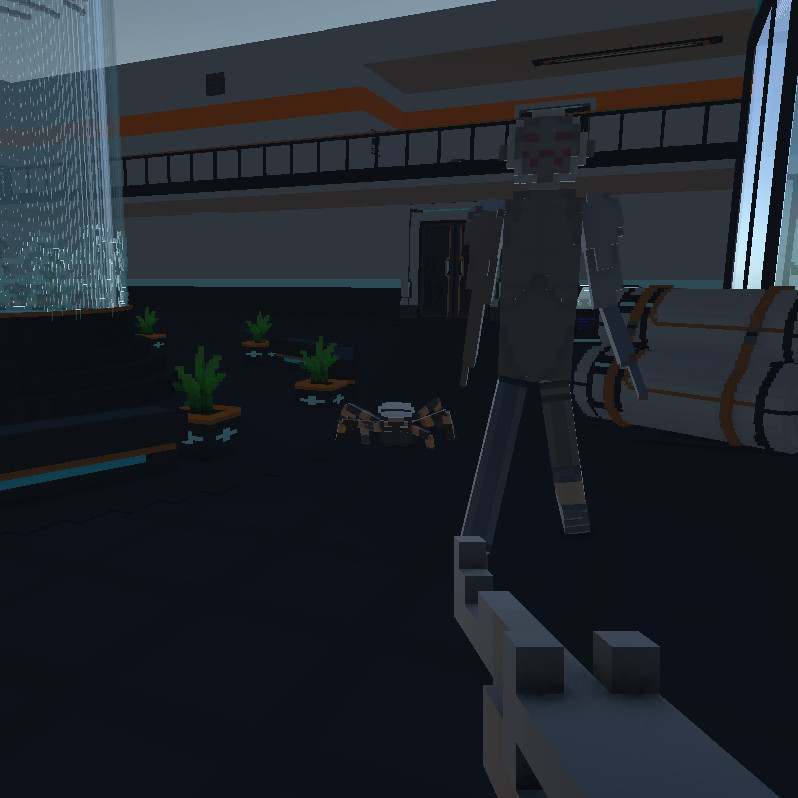

Our Final Aphelion
This project page is for the CS 426 Senior Project in Computer Science, Spring 2026, at UNR, CSE department
Project Description
Our project is an online multiplayer first-person extraction shooter game. The game allows players to choose an objective at the start before entering the map, which they then will have high-tension gameplay. In this prototype, we successfully completed all of our level-1 functional requirements, including online multiplayer, an objective system, and an inventory system. The target audience for our game is gamers who are interested in FPS, Co-op, and extraction games as well as high-tension gameplay that will come from our game. Our purpose for the game is make it enjoyable to play, gain a little bit of money once on Steam, and gain experience and knowledge in video game development and networking.
Team 10
- Malcolm Hays
- Joe Wu
- William Leon
- Austin Fredstrom
Instructors and Advisors
- Instructor: Dave Feil-Seifer (UNR)
- Instructor: Vinh Lee (UNR)
- External Advisor: Quinn Contaldi (UNR)
- External Advisor: Joshua Dahl (UNR)